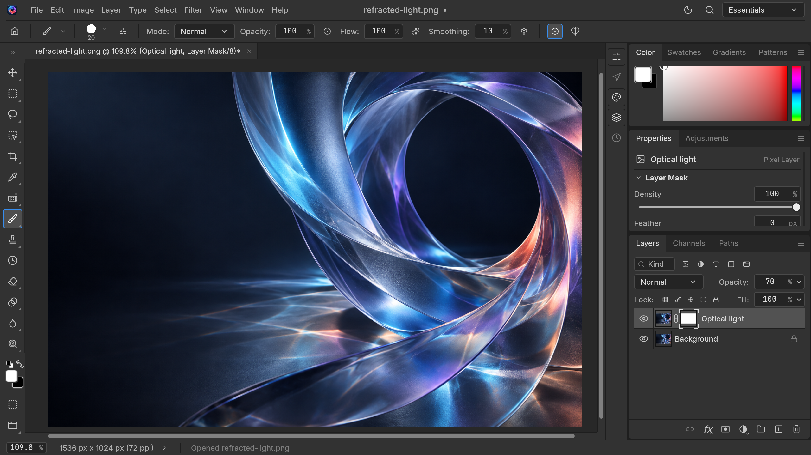

Build in layers
Combine images, adjust opacity and use masks to shape the parts you want to keep.
Photo Pro is a native image editor for Mac. Bring your images together with layers, masks and thoughtful color controls.
Start with an image. Refine the light, build a composition, and keep the pieces of your work within reach.

Combine images, adjust opacity and use masks to shape the parts you want to keep.
Adjust brightness and contrast with a live preview as you refine your image.
Save layered work in Photo Pro’s native format and export your finished image.
Photo Pro processes your documents on your Mac. The current app has no accounts, advertising or usage tracking, and doesn’t upload your images to the publisher.
Read the privacy policyPhoto Pro is being prepared for the Mac App Store. The download link and pricing will appear here when it is released.
The current app has no account system. You edit files locally on your Mac.
You choose where to save your documents and exports. Settings, presets and recovery data are kept locally by the app.
Visit the Contact page for product questions, support and privacy enquiries.